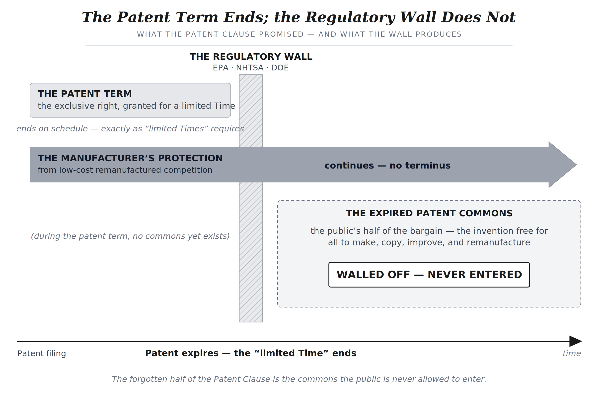
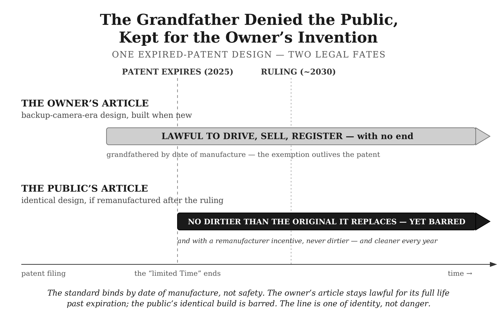
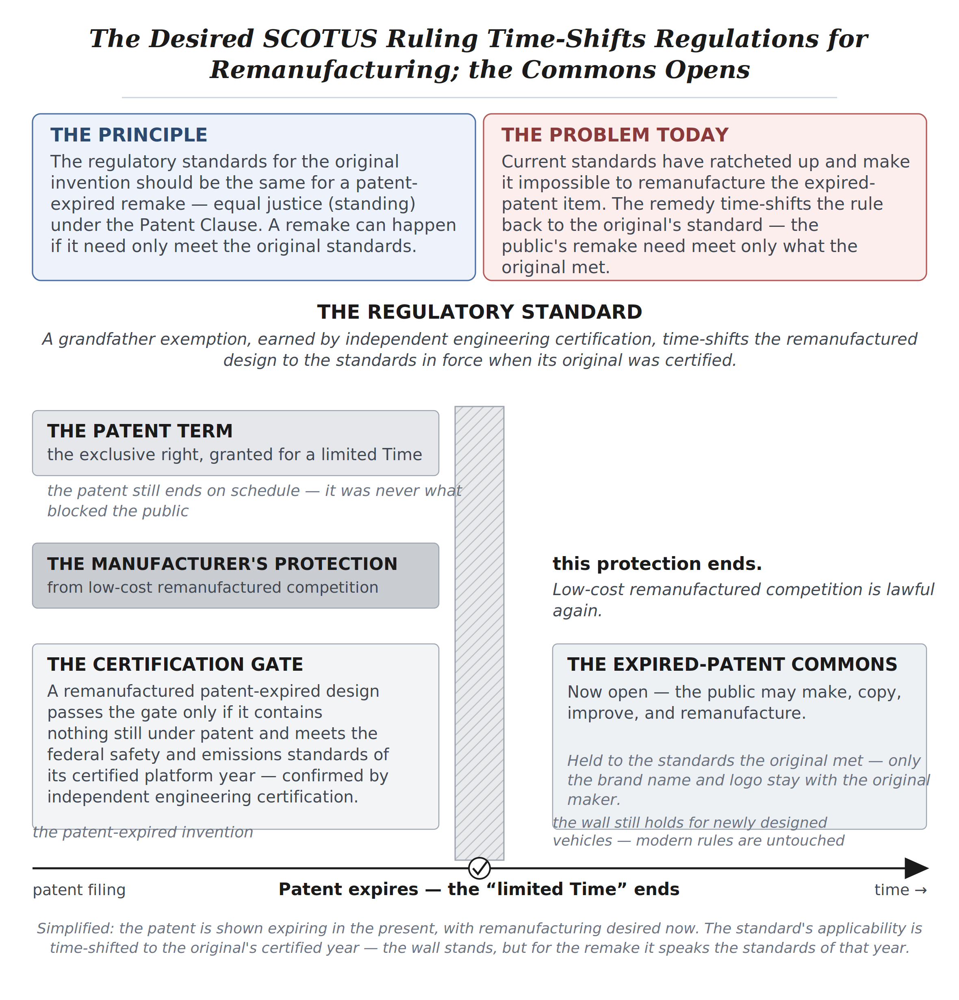

The Forgotten Half of the Patent Clause
How Federal Regulations Doubled the Cost of American Living and Rewrote the Constitution
An overview of the two-volume work — the argument, what it costs American households, the remedy, and the objections answered — in the space of a few minutes’ reading.
Over the past year the author has published 39 long-form articles arguing that roughly half of the doubling in America’s cost of living since 1970 is the downstream consequence of a constitutional violation no court has yet been asked to rule on. Those articles have drawn more than 1.7 million impressions on the Patent Clause argument specifically, and more than 7.7 million impressions across more than 110 articles on the related MALA (Make American Living Affordable) and Hybrid Voting work.
About the author. Roleigh Martin is a retired Fortune 25 systems analyst (Optum / UnitedHealth Group) and co-inventor of U.S. Patent No. 5,359,509 (AdjudiPro®), an AI expert-system for automated claims adjudication — so this constitutional case for both patent holders and the public comes from someone who has actually held a patent, not only studied one. He founded and runs the 115,000-member Make American Living Affordable (MALA) community on X.
The foreword. Both volumes carry a foreword by Gord Magill, author of End of the Road: Inside the War on Truckers. Of the nineteen plaintiff categories the book identifies, America’s semi-truck drivers are among the most affected and the most politically resonant, and Gord speaks for them; his work on trucking has taken him to Fox News’s Ingraham Angle, Tucker Carlson, Steve Bannon’s WarRoom, and Real America’s Voice.
The work is two volumes. Both drafts are finished. Book 1 runs approximately 558 pages at 6″ x 9″ trim; the full endnotes apparatus (roughly 177 pages, with a live link for every citation) is hosted at marti124.github.io/Patent_EndNotes so readers can consult it online rather than page through it in print. (If the endnotes are printed instead, Book 2 has room for them — it runs 230 pages without them.)
The book’s central originality is the Patent Clause’s forgotten half — the expired-patent commons the Constitution protects, and the permanent federal prohibition on remanufacturing regulated vehicles and machinery that has abused it. Book 2 carries the second of the project’s three original contributions: Hybrid Legislative Voting, a constitutionally permitted revival of a pre-1970 legislative secret-ballot option that would free members of either party to vote against donor and leadership pressure. Its hook comes straight from the Treasury’s own record — no fiscal year since 1957 has closed with the national debt lower than the year before — and the chapter offers it not as a cure but as a way to make budget discipline structurally possible again.
The patent-clause argument about the constitutionality of blocking remanufacturing of patent-expired vehicles and other regulated machinery has been stress-tested in public. An open-book examination — the seven prompts, the scoring sheet, and the full chapter text — is hosted at marti124.github.io/Patent_Exam, along with how all eleven AI models answered the exam’s most important question, Prompt 7. Eleven independent AI models, including the legal-research engine OpenCase, each reached the conclusion that the argument raises a serious constitutional question warranting judicial review. The convergence is part of the record — but it decides nothing; only a court can.
The Argument in Brief
The Constitutional Violation
Article I, Section 8, Clause 8 of the Constitution lets Congress grant inventors exclusive rights, but only “for limited Times.” When a patent expires, the right to make, copy, and improve the invention passes to the public. That is the bargain: a temporary monopoly in exchange for a permanent public domain. The Supreme Court has affirmed it in at least thirty-eight separate holdings across one hundred forty-six years of unbroken precedent.
The clause is older than the patent system it authorizes: it was written in 1787, three years before the first Patent Act. Its full text is a single sentence — “To promote the Progress of Science and useful Arts, by securing for limited Times to Authors and Inventors the exclusive Right to their respective Writings and Discoveries.” The Supreme Court reads that sentence as Graham v. John Deere did in 1966: the Patent Clause is “both a grant of power and a limitation.” Congress may secure an inventor’s protection against the public reproducing or remanufacturing his creation — but only for a limited time, and the limit binds Congress as surely as the grant empowers it.
However, beginning around 1970, federal energy and safety agencies — the EPA, NHTSA, and the Department of Energy — built a wall around that bargain. They did not repeal the public’s right to remanufacture; they could not have done that openly. Instead they wrote rules that make it impossible to lawfully build and sell a patent-expired tractor, pickup truck, furnace, semi-truck, or light bulb.
This follows from two features of these energy and safety rules — a documented regulatory ratchet and a statutory anti-backsliding mechanism — neither of which grants a grandfather exemption for remanufactured patent-expired products. The core mechanical technology is legally free. Nobody can lawfully build it. The patent expires on schedule, at twenty years — but the bargain is broken on both its halves at once, the inventor’s and the public’s.
The original manufacturer keeps, in practice, the benefit of a monopoly with no end, which is precisely what “limited Times” was written to forbid. And the public never receives the expired-patent commons that the clause promised it: the invention that was supposed to pass into common use at expiration never does.
This is the work’s central claim, and it is the one a constitutionalist will weigh first: it is exact and provable. The regulations exist. Their prohibitive effect on remanufacturing can be documented category by category.
The words “limited Times” have been effectively removed from the Constitution — by federal agencies, without an amendment and without a vote. A category-level audit of federal regulatory frameworks against U.S. consumer spending finds the wall now encloses an estimated 58 percent of what Americans buy, with another 15 percent hindered and only 27 percent flowing freely.

Figure 1. The cancelled bargain. The patent term ends on schedule; the regulatory wall, built across the expiration date, does not — the manufacturer’s protection runs on with no terminus while the public’s Expired Patent Commons stays walled off.
No federal court has ever ruled on this question. It is a question of first impression; the case has simply never been filed. The book is the public-facing brief for the litigant who eventually files it.
What It Costs American Households
The constitutional violation is exact. The price of it can only be estimated — and the book is deliberately conservative about that estimate. Relative to household income, Americans now pay roughly double what they paid before 1970 for the categories the wall encloses: cars, trucks, tractors, furnaces, and light bulbs. Two independent lines of evidence support the doubling. The roughly ninety nations that permit patent-expired remanufacturing sell equivalent products at about one-third of U.S. prices; and the same categories, measured against wages, cost twice what they did in 1970.
Two independent analyses place the cumulative transfer from households to incumbent manufacturers at a conservative $22 trillion since 1970 — about $3,385 per household every year — with the true figure plausibly $30 to $45 trillion once excluded categories are counted. The book leads with the floor, not the ceiling. The exact dollar figure is contestable; that it is very large is not.
The injury is not only financial. Every new vehicle now carries a federally mandated event-data recorder, and automakers have been documented selling drivers’ location and behavior data to insurers. More than five million Americans whose paid work is driving — truckers, delivery drivers, rideshare and taxi operators — face displacement by an autonomous-vehicle rollout that is cost-competitive only because federal regulation has made the human-operated vehicle so expensive. Remove the wall and that math reverses.
The Remedy: A Three-Legged Stool
The remedy requires no new statute, no constitutional amendment, and no one to break a law. It can be obtained by a single plaintiff with standing, in a single federal courtroom.
A federal court can order the first two legs directly. The first is a grandfather exemption: a remanufactured product built on an expired-patent platform is held to the federal safety and energy-efficiency standards in effect during the platform year it mimics — a 2005-platform truck meets 2005 standards, a 1970-platform tractor meets 1970 standards.

Figure 2. The grandfather denied the public, kept for the owner’s invention. The owner’s article stays lawful for its full life past expiration; the public’s identical remanufactured design is barred — though it is never dirtier than the original it replaces.
The second is independent engineering certification on the Underwriters Laboratories model, rather than federal-agency control.
The third leg is political, not judicial: under existing Article I trade powers, Congress and the President can deploy a tariff, an import restriction, or both, so foreign producers cannot undercut American workers building patent-expired platforms in American plants. The cost-of-living relief and the manufacturing-jobs revival arrive together.
The result is not a museum piece. It is a freshly engineered vehicle assembled from any combination of expired patents — a new pickup at $25,000 instead of $72,495, a residential furnace at $3,000 installed instead of $18,000 — built by American workers, without the surveillance subscription, and without the patent rent.

Figure 3. The proposed remedy. After a favorable ruling the wall does not fall — it synchronizes: a remanufactured patent-expired design is held to the standards of its platform year, while modern designs still meet modern rules.
Why the Question Escaped Notice for Fifty-Five Years
A reasonable reader — and a reasonable congressional office — will assume there must be a catch. If the argument is sound, why has no member of either party raised it, no court been asked, no scholar written it? The book devotes a full chapter to that question, because the answer is not a catch. It is a diagnosis.
Six independent forces produced the silence. First, a captured regulatory ecosystem of lobbyists and revolving-door staff, its scorecard built by the 1970 congressional reforms, has every incentive to leave the question on the floor. Second, a “bootleggers and Baptists” coalition (Bruce Yandle’s 1983 paradigm) — sincere safety and environmental advocates alongside incumbent manufacturers — defends the wall from both sides, and no one in it has both the expertise to see the constitutional question and a reason to raise it. Third, an institutional blind spot leaves the expired-patent commons in the gap between environmental law, administrative law, patent law, and constitutional law, on no one’s desk. Fourth, the doctrinal floor: until very recently the case was not even filable, because for forty years Chevron deference would have killed any such challenge before a court could reach the merits. Fifth, moral acquiescence: the few who did privately recognize the violation faced professional and social costs for raising it that the psychology of dissent reliably suppresses. And sixth, rule-induced behavior — the game-theoretic fact that the great majority of participants simply follow rules they did not write, producing an outcome that looks coordinated but requires no coordinator, and therefore no conspiracy. The forces are independent: removing any one would not break the silence, which is why it has held for fifty-five years — and why, when it breaks, it will break suddenly.
That last point is the one a legislator should note. The doctrinal floor is now complete. The Supreme Court’s 2024 decision in Loper Bright Enterprises v. Raimondo ended Chevron deference, and a line of recent takings and major-questions decisions supplies the rest. For the first time in fifty-five years, a court asked this question may reach the merits. The silence was structural — not a verdict on the argument — and the conditions that held it in place have changed.
The Environmental Question
The most serious objection a thoughtful office will raise is environmental: does restoring the right to remanufacture unleash 1970s pollution? The book answers this directly, and the answer is no.
The set of expired patents is not frozen at 1970. It is a continuously expanding kit of components. The catalytic converter’s core patents expired in the mid-1990s; electronic fuel injection’s expired across the 1990s. Because a favorable ruling is unlikely before 2030, a remanufactured car or pickup built then from expired-patent parts can carry roughly 2010-era emissions controls, not 1970 ones — a vast improvement over the baseline the objection imagines, and no dirtier than the millions of vehicles of that same vintage the government already permits to be driven, sold, and registered today. The point is worth stating plainly: by letting that vintage remain lawfully on the road, the government has already judged it safe enough; a freshly built version of it cannot be more dangerous than the used one beside it in traffic. Market forces reinforce the result: a deliberately dirty product fails state inspection in two-thirds of the states, fails insurance underwriting, and fails the financing and brand tests. A race to the bottom is a poor business plan.
The political branches can raise that floor further without a dollar of direct spending. Government has historically had only three blunt tools to steer private behavior: an ordinary tax deduction (weak — businesses already deduct expenses), a tax credit (powerful but costly to the Treasury), or a civil penalty (coercive). The book proposes a fourth tool — the third of the project’s three original contributions, and one the author has advanced in print since 1994: a multi-value tax deduction. For every dollar a remanufacturer spends fitting the newest patent-expired emissions-control technology, it could deduct two or three dollars as a business expense — far cheaper than a credit and far more inducing than an ordinary deduction. That makes the cleanest public-domain control system the economical default in every remanufactured vehicle, with no consumer subsidy and no direct outlay. The environmental floor then rises on its own, year after year, as the public domain advances, and the market still sets the vehicle’s price.
And the Constitution already supplies a safety valve. If a remanufactured category genuinely creates unacceptable harm, the Fifth Amendment’s Takings Clause lets the government restrict it — on the condition that it compensates the public for the vested right being taken. That converts regulation from a hidden cost buried in the price of every product into a visible, accountable line on the federal balance sheet. This is not weaker environmental protection. It is environmental regulation with a price tag, conducted on the constitutional terms the Founders wrote. An environmentally minded reader can support this remedy without abandoning a single environmental commitment.
Honesty about that safety valve requires naming one cost. By requiring compensation, the Takings Clause creates, at the margin, a subsidy for the very behavior a regulation means to discourage — Milton Friedman’s principle that you get more of whatever you subsidize. Takings doctrine and market reality constrain the gaming (compensation is fair market value, not a strategic buyout; a factory tooled to attract a taking has expectations a court will read as unreasonable), but the residual subsidy is real. The book answers it with an optional Sunset Amendment, offered as structural insurance rather than a requirement: remanufacturing rights on an expired-patent platform stay protected against uncompensated cancellation for twenty years from first lawful production, after which Congress may restrict further remanufacture prospectively without compensation. That closes the long-run subsidy while leaving the Phase 1 remedy at full strength during the window where the public benefit is greatest — and it is deliberately cross-partisan, the kind of reform a coalition running from the Sierra Club to the Federalist Society could support, as the 27th Amendment’s coalition once did.
Who the Work Reaches
No one consented to continuous in-vehicle surveillance. No one consented to five million American driving jobs being scheduled for autonomous replacement. No one consented to paying twice in real-income terms what their parents paid for the same cars, tractors, furnaces, and light bulbs. The work is written for a broad coalition — the family that cannot replace a car without going deeper underwater in debt; the owner-operator whose rig costs more than his house; the citizen who has watched the regulatory state grow captured and wants a constitutional answer rather than a partisan one — and it ends not with a grievance but with a toolkit.
The books and their companion feedback infrastructure give ordinary citizens a communication channel, equipped with hard evidence, to push back: citizens send the letters, and the toolkit supplies them — the cover letter pre-populated and editable, the data attachments documented, the case ready to put in the mail.
The argument is constitutional before it is political, and it belongs to no party. The words “limited Times” are in the Constitution. The work asks only that they be enforced.
The Companion Websites
Three public websites carry the book’s apparatus, and a reader can inspect all of it before requesting the manuscript.
The open-book examination — the full text of the exam chapter, a scoring page for anyone who wants to take the exam, and how all eleven AI models, including the legal-research engine OpenCase, handled the exam’s most important question, Prompt 7 — is at marti124.github.io/Patent_Exam.
The citizen toolkit — eight letter-generation apps already built (the governors-and-attorneys-general app serves both recipients in one), with more to come before the book goes to press — is at marti124.github.io/Patent_Letters.
Both volumes are complete, and the complete manuscripts are available on request.
This constitutional argument is being prepared for federal court. As the book moves toward publishers, one question recurs: whether a non-lawyer can be trusted to handle the argument responsibly. A few words from a practicing attorney would answer that better than anything the author could say.
If you are a lawyer and, after reviewing the materials, you consider the work well-researched and deserving of serious consideration and a public hearing, the author welcomes a brief statement to that effect — in your own words, implying no agreement with the book’s conclusions. And if you simply know an attorney for whom this argument is suited, passing it along would be a real help.
Any attorney who reaches out can receive the complete Author’s Review manuscript for their review — as a PDF, as a printed trade paperback (available at cost, including shipping), or as an EPUB — whichever suits how you prefer to read.
To reach the author, or to send a paragraph: